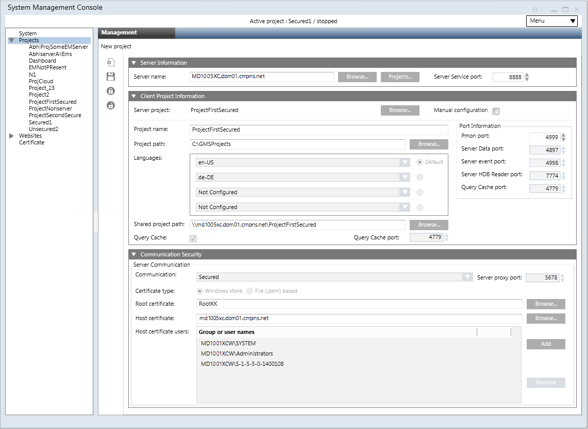

Create a New Client/FEP Project
It is recommended to use the default project creation mode, the Automatic configuration mode for Client/FEP project creation. In this mode, the Communication mode and the Certificate type are automatically set to match with those of the selected Server.
- Using SMC, Server root and Client/FEP host certificates created from the Server root certificate are imported in the appropriate Windows Certificate store.
- In the SMC tree, select Projects.
- Click Create Project
 .
. - In the Server Information expander, do the following:
a. In the Server name field, type the Full computer name of the server or click Browse to locate and select the server using the Workstation Picker dialog box.
NOTE: To troubleshoot the messageServer is not available, see troubleshooting steps.
b. Click Projects to browse for Server projects using the Project Information dialog box.
c. In the Project Information dialog box select a server project configured for secured Client/Server communication that you want to connect to and click OK. - The details of the selected server project, including the Shared project path are added in the Client Project Information expander. The default Communication Security details are modified and are set to match the security configuration details of the selected server project.
- In the Client Project Information expander, do the following:
a. (Optional) Edit the project name, if a project with the same name already exists in the SMC tree.
b. (Optional) Edit the project path. - In the Communication Security expander, add the project’s Pmon user to the list of user’s in Host certificate user, if the Pmon user is not an administrator user or already added in the list. Adding the user in the Host certificate user provides access to the user on the host certificate and its private key.
NOTE 1: Only users and groups listed for the selected host certificate can launch the Desigo CC Client on the Client/FEP.
NOTE 2: Even if the logged-on user of the Client/FEP operating system is a member of the Administrators group and has rights on the private key of the host certificate provided, you must still explicitly assign this user rights on the host certificate’s private key by adding the user to the Host Certificate User list. - Click Save
 .
.
- The new project is created as a child under the Projects node in the SMC tree and is stopped. Also, the project folder with subfolders and files is created at the specified path.


NOTE:
When applying security for Closed mode configuration, consider the following: GMSDefaultUser is Windows user that must have read/write access rights to the [Installation Drive:]\[Installation Folder]\[Project Name] folder on the Server (for example [Installation Drive]:\GMSProjects\MyProject).
Using Windows Explorer, you can enable such access in the security properties of the project folder.
For more information about folder security, refer to Windows documentation.
If you use a secure client/server connection, GMSDefaultUser must be included in the list of host certificate users of the project. You can configure such list in the Security expander of SMC Server.